The valley's terrain was a relief bitmap shaded once at load with a fixed north-west light — the same picture at dawn, noon, and midnight, darkened by a flat navy veil at night. This rebuild moves the terrain onto a WebGL underlayer lit per-pixel by the live master-clock sun: cast ridge shadows sweep the valley through the day, dawn rakes the east wall while the floor sits in shadow, a moon lights the night with real form, and cloud shadows + valley fog drift over it all. The simulation was not touched.
Same camera, same seed, same valley — the whole 2.56 km map at dawn. Before: a flat relief, evenly bright, the light coming from nowhere in particular. After: the east ridge throws kilometre-long shadow across the floor, warm light catches only the east-facing slopes and the crests — the documented Korengal morning, on the live clock.
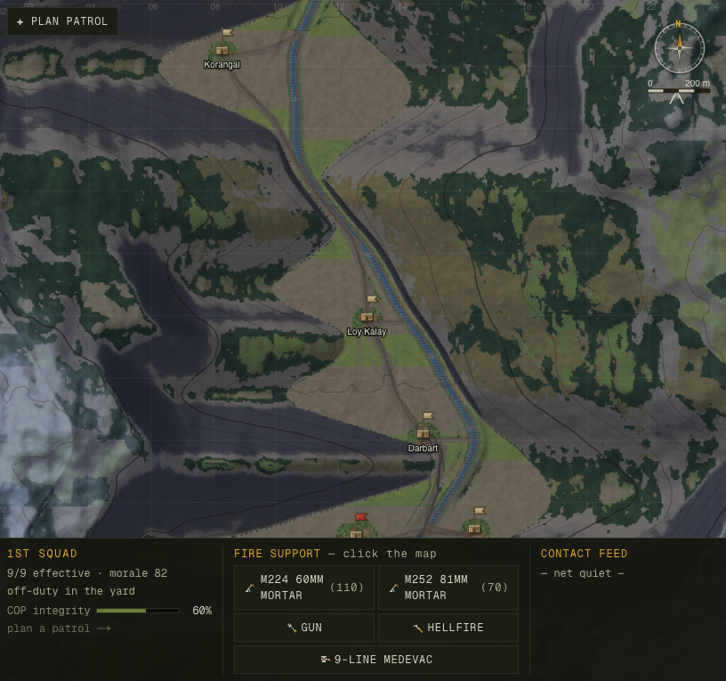
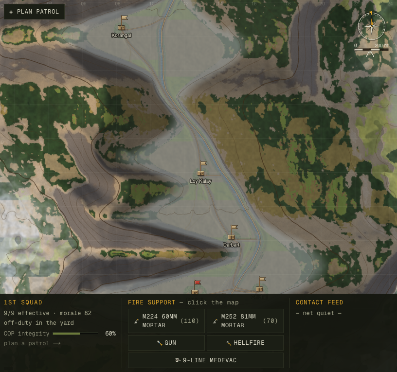
One camera, one minute-by-minute sweep of the clock at whole-valley zoom. The shadow line walks down the west wall as the sun climbs; the floor drains out of shadow by mid-morning; at dusk the light rakes from the opposite side. This is the master clock made literal — every frame is the same terrain under a different sun, computed live, never baked.
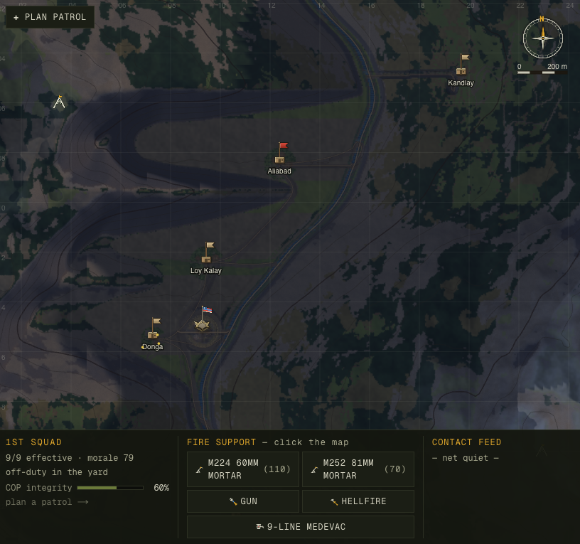
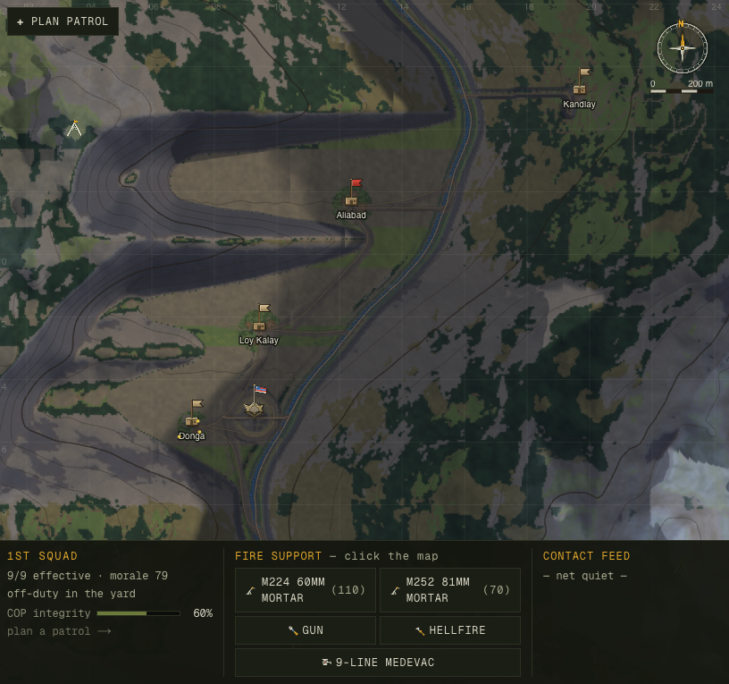
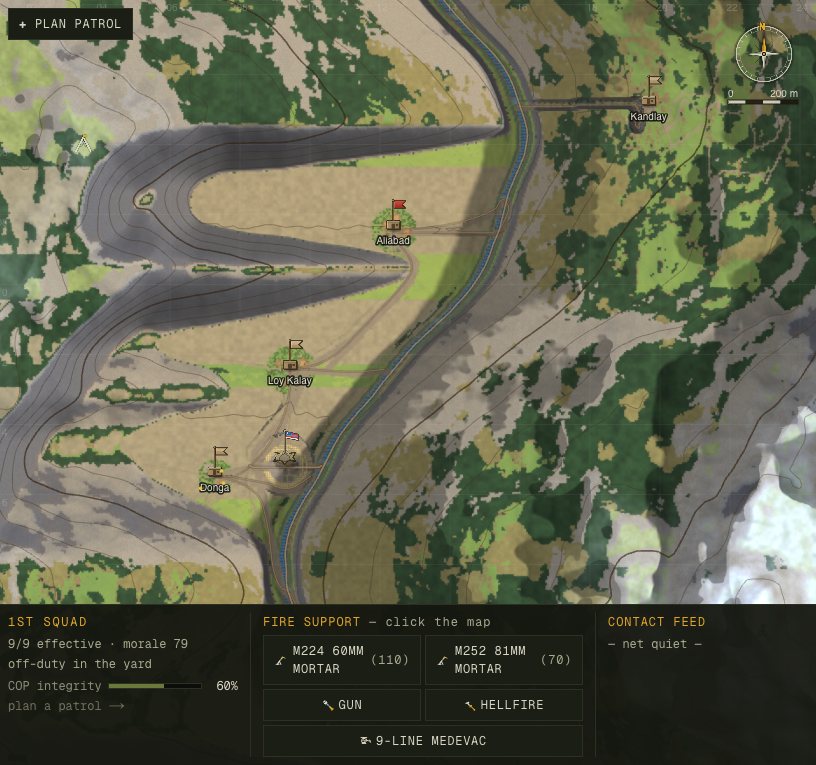
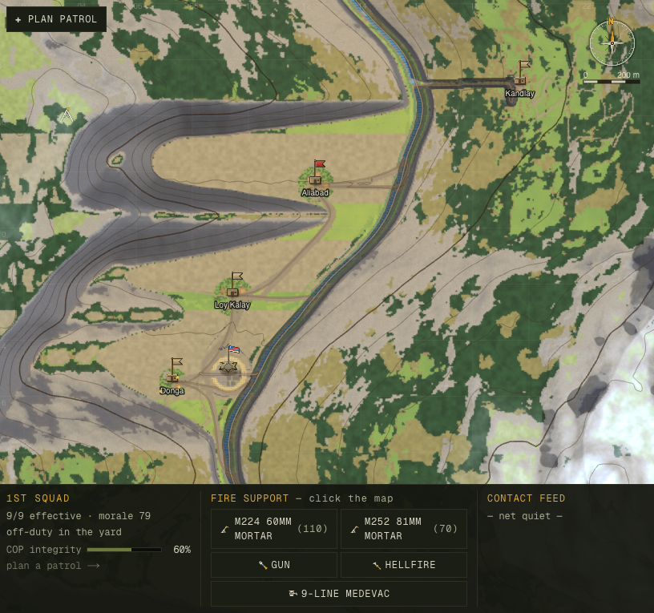
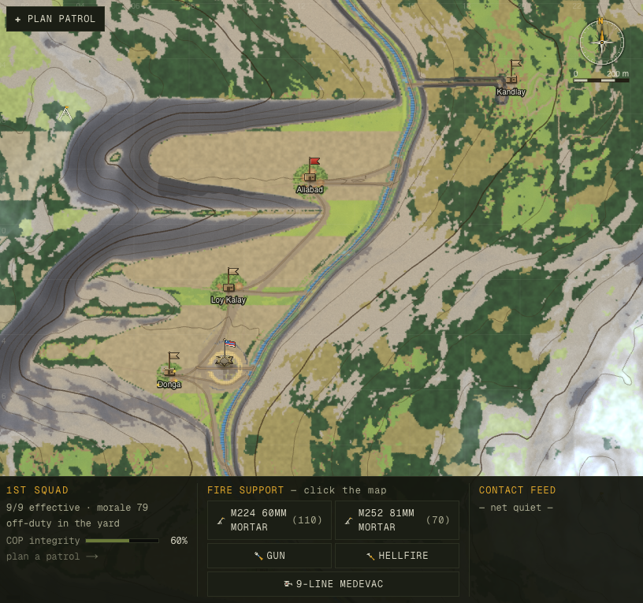
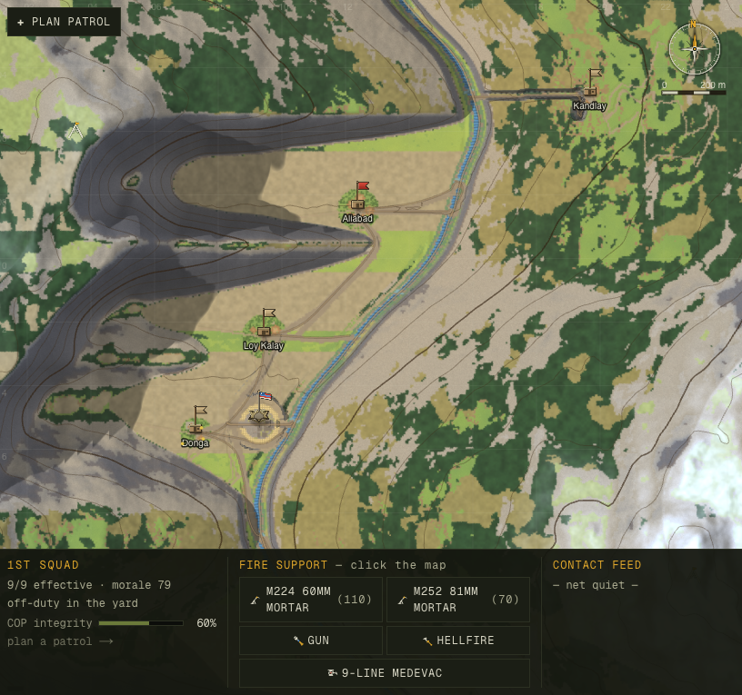
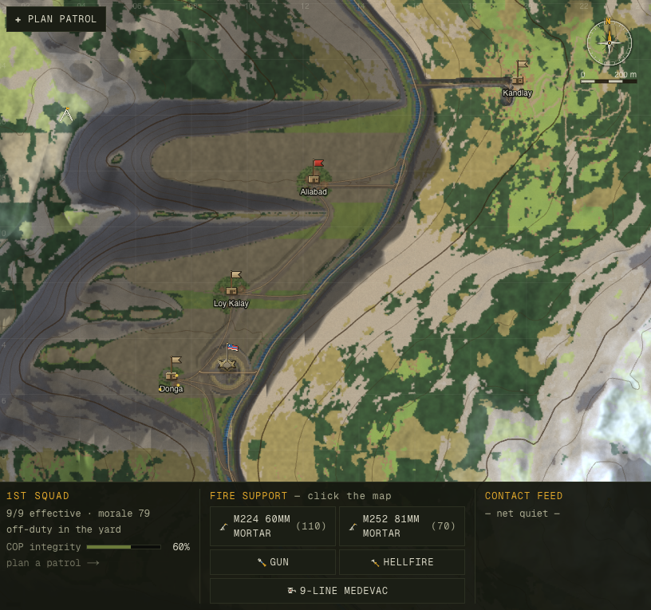
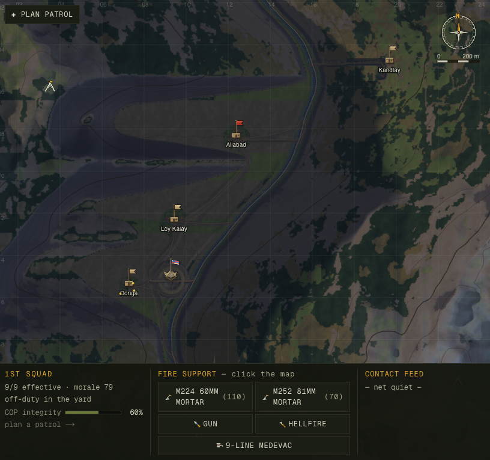
Two stacked canvases. A new WebGL2 underlayer renders the terrain in a single fullscreen-triangle draw, lit per-fragment from a 512² heightmap. The existing 2D canvas sits on top, transparent where terrain used to be, and keeps every crisp vector — contours, paths, units, combat FX, HUD. If WebGL is unavailable the 2D path falls back to the old baked bitmap, byte-identical.
The single sun/moon/grade source is lib/render/sky.ts — a pure
function of the clock. Its nightFactor is provably identical to the gameplay
light curve (verified to 0.0 error across 24 h × 6 weathers), so the picture can never
disagree with what the soldiers can see.
The old flat rgba(8,14,30) veil is gone. Night is now real low-key moonlight — a fixed gibbous moon rides the southern sky all night, raking the ridges so the relief keeps its form, cool and scotopic, with the COP's life-signs glowing warm. Dusk and dawn carry a golden-hour grade. The grade darkness comes from the lighting (the sun is gone), not from crushing exposure — so it never collapses to mud.
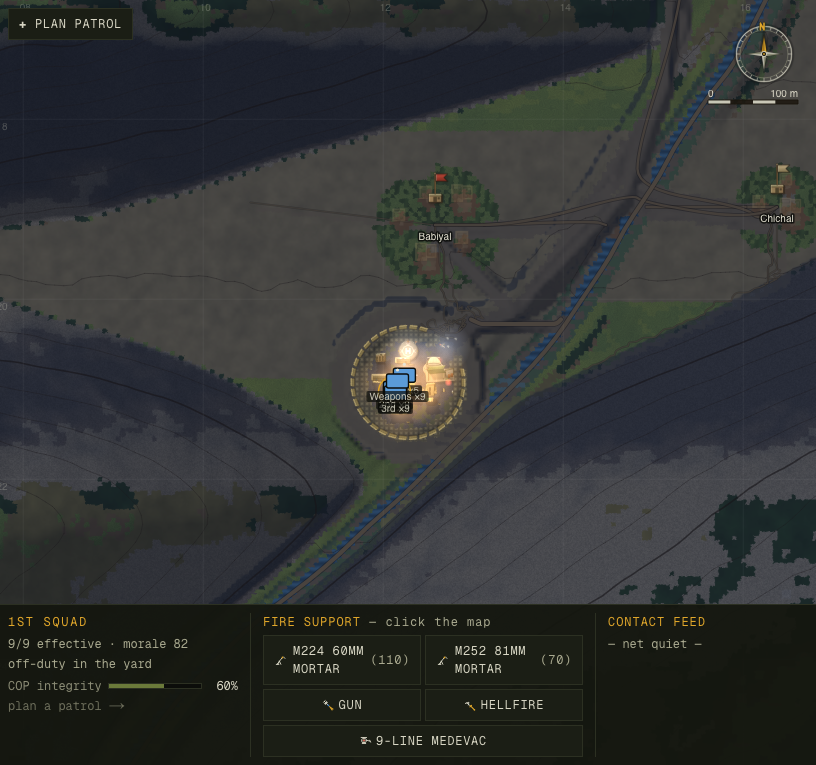
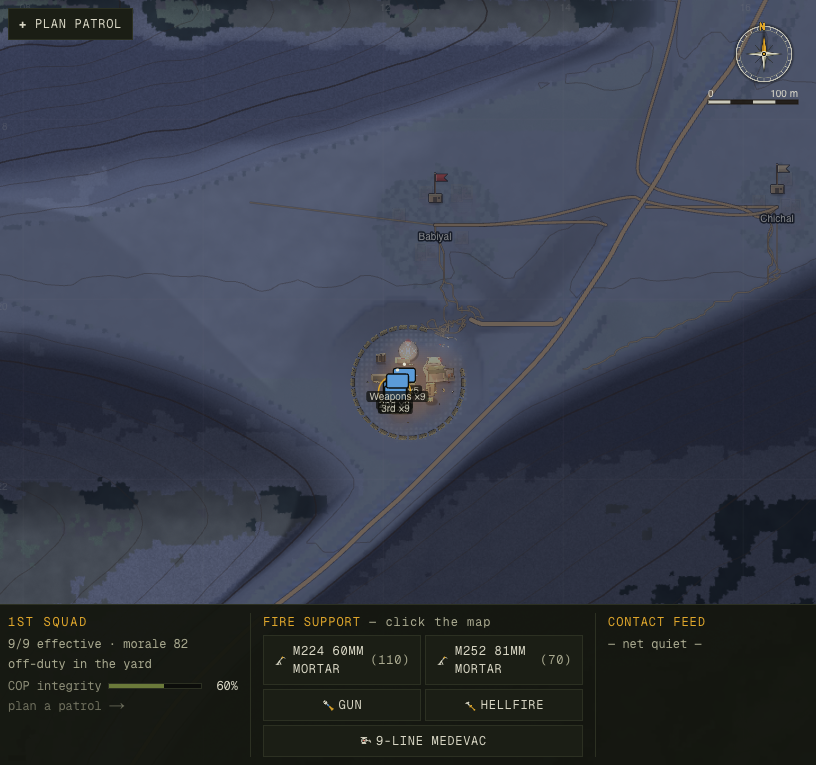
The moon intentionally lifts the visual night well
above the gameplay light floor (0.05) so night ops stay readable — while the gameplay
nightFactor that drives perception stays exact. Measured terrain luma (left 60%
of frame), relative to noon:
| Time | ambient (sim) | terrain luma |
|---|---|---|
| Noon | 1.00 | 1.00× |
| Dusk | 0.38 | 0.56× |
| Night | 0.05 | 0.44× |
Cloud shadows drift across the valley with the wind (sparse cumulus on a clear day, broad occlusion under overcast) — the cheapest tell that you're looking at aerial footage of a real place. And dawn fog pools: it fills the river draw and the low ground — computed from a local valley-floor field so it ignores the 450 m climb from the north mouth to the south head — then burns off through the morning. Under Fog weather the whole valley socks in.
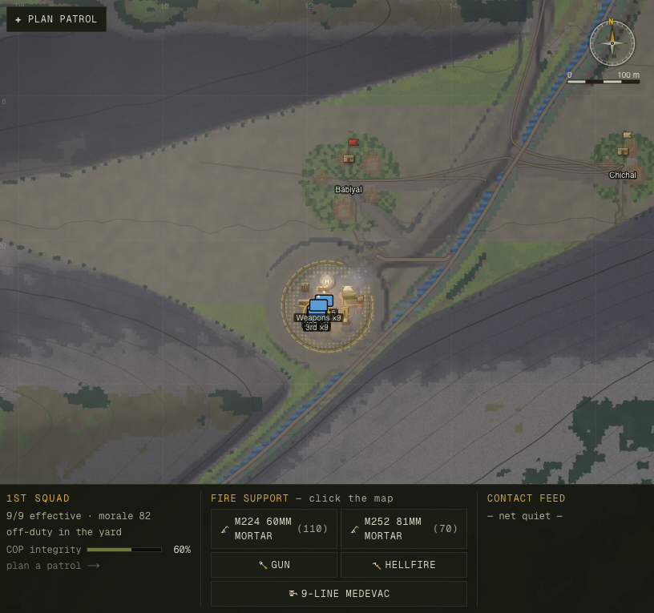
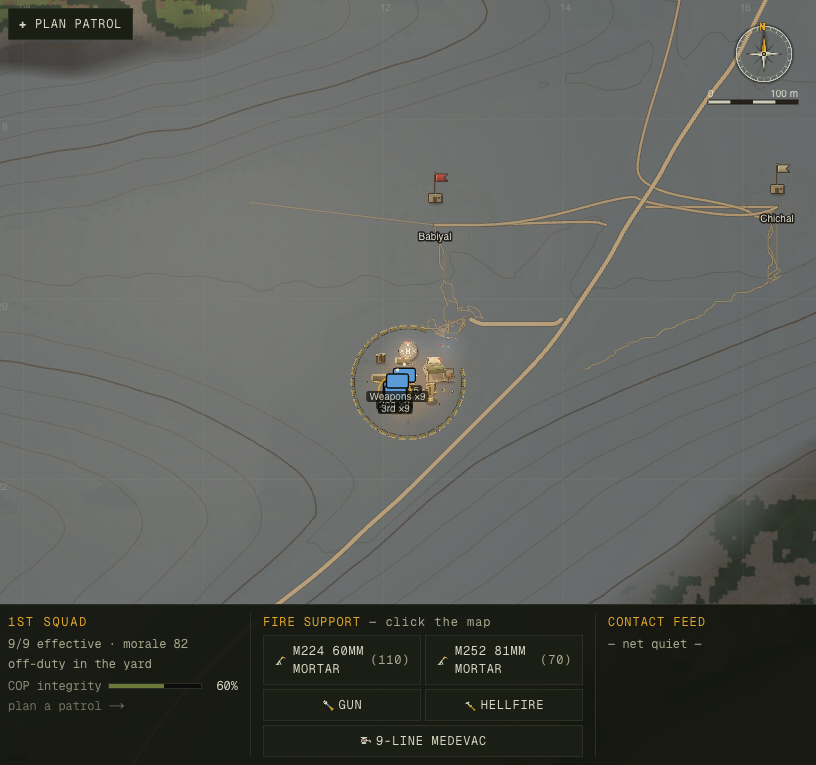
At golden hour the COP's buildings and guard towers throw long cast shadows that sweep with the same sun lighting the terrain — so the strongpoint sits in the valley instead of floating on a frozen diorama. Close in, per-fragment relief and ground grain keep the detail crisp.
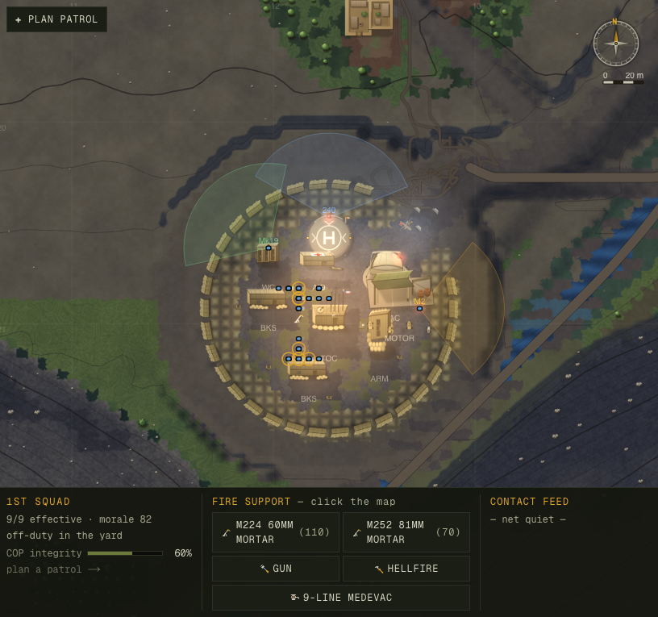
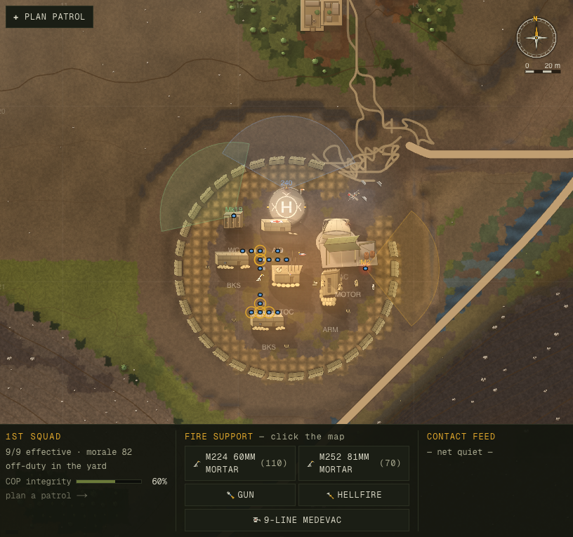
Six commits on a strict spine. Each shipped behind a numeric gate captured on the real GPU, diffed against the prior step, so the game was never broken and every claim is checkable. The design came from a 4-proposer / 3-judge fan-out (724k tokens) whose verdicts are archived alongside this report.
| Step | What | Gate |
|---|---|---|
| C1 | Sky module — one sun/moon/grade source | sun probe: nightFactor identity 0.0 across 24h×6wx |
| C2 | WebGL underlayer at blit parity | operational zooms meanDiff 1.4–2.6 vs 2D; registration exact |
| C3 | Per-fragment lighting + cast ridge shadows | marquee dawn-shadow sweep; noon legible at 4 LOD bands |
| C4 | Night relight + time-of-day grade | daytime pixel-identical (meanDiff 0.000); night relit |
| C5 | Cloud shadows + valley fog | fog-dawn Δ20.7; clouds drift; 2D fog parity by construction |
| C6 | Sun-tracked structure cast shadows | long at dusk (Δ0.27), none at noon (Δ0.003) |
Standing checks across the campaign: tsc clean · build green · smoke OK · balance unchanged (the simulation layer was never touched) · new render files lint-clean. Determinism preserved: every effect is a pure function of the seeded clock + spatial hashes — no per-frame randomness.